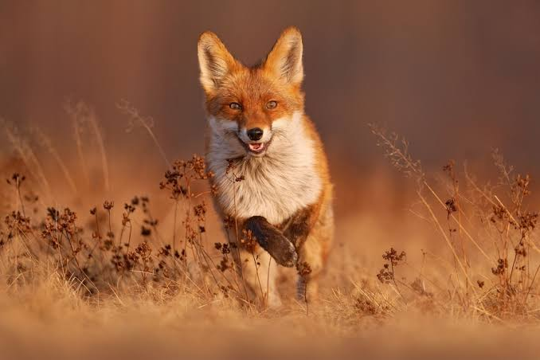
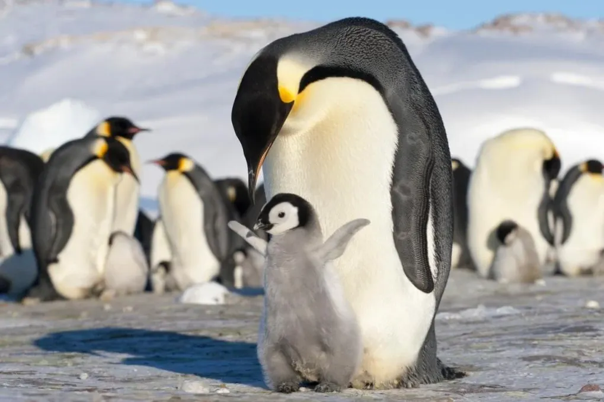
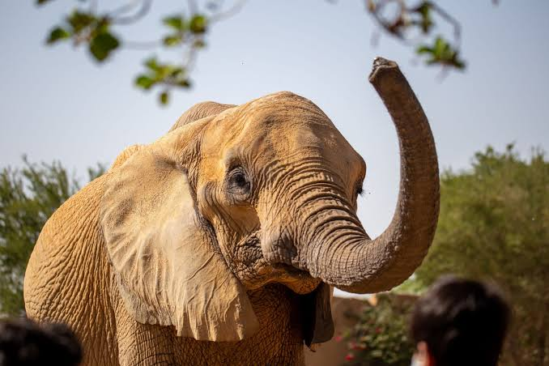
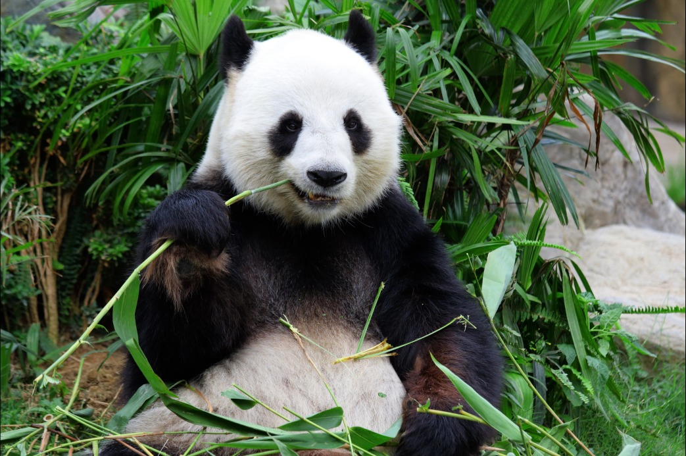
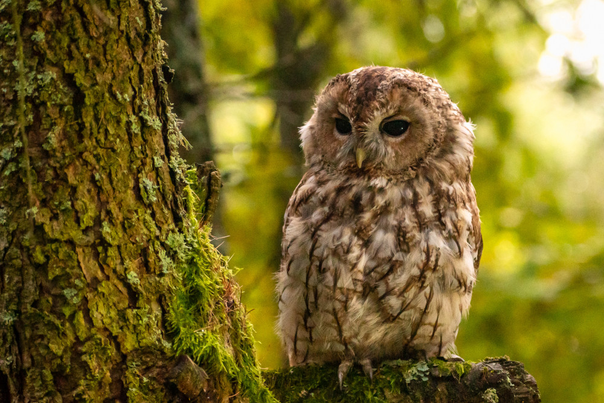
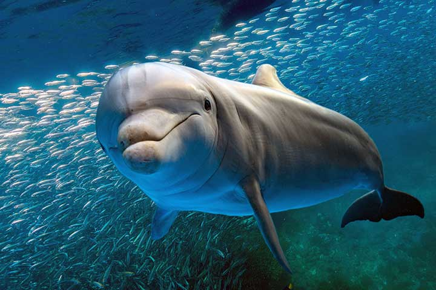

Malá galéria zvierat, z rôznych kútov sveta.

Šelma s hustým chvostom, ktorú stretneš aj na Orave.

Vták, ktorý nelieta, ale výborne pláva v studenom mori.

Najväčšie suchozemské zviera s dlhým chobotom.

Medveď, ktorý sa živí hlavne bambusom.

Nočný lovec s tichým letom a veľkými očami.

Múdry morský cicavec, ktorý sa dorozumieva pískaním.